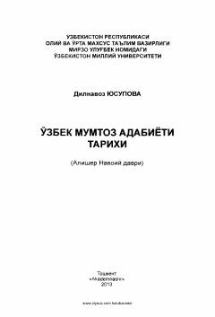

OMAlisher Navoiy hayoti, lirikasi va dostonlari tahliliga bagʻishlangan ilmiy qoʻllanma.
Ushbu oʻquv qoʻllanmada buyuk mutafakkir Alisher Navoiyning hayoti, uning boy lirik merosi, Xamsa dostonlari hamda ilmiy-adabiy asarlari ilmiy mezonlar asosida tahlil qilingan. Kitobda Navoiy ijodini oʻrganish tarixi, asarlarning gʻoyaviy-badiiy xususiyatlari va zamonaviy talqinlari yoritib berilgan. Qoʻllanma oliy oʻquv yurtlari talabalari, filologlar va adabiyot muxlislariga moʻljallangan.